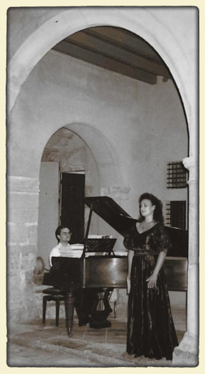

Corinne Vinchon
Chanteuse lyrique et professeur de chant, diplômée de l'École Normale de Musique de Paris et du CNIPAL de Marseille.
Enseigne en cours particuliers, à l'ASCD Paris 13ème et également à l'Association Philotechnique de Paris.
Travaille avec des chanteurs professionnels et amateurs mais aussi des personnes qui recherchent une meilleure aisance dans leur voix au quotidien.
Adapte son enseignement aux besoins et aux particularités de chacun en visant le bien-être du corps et de la voix.
